Enjoy Our
Delicious Meal
Suggest A meal

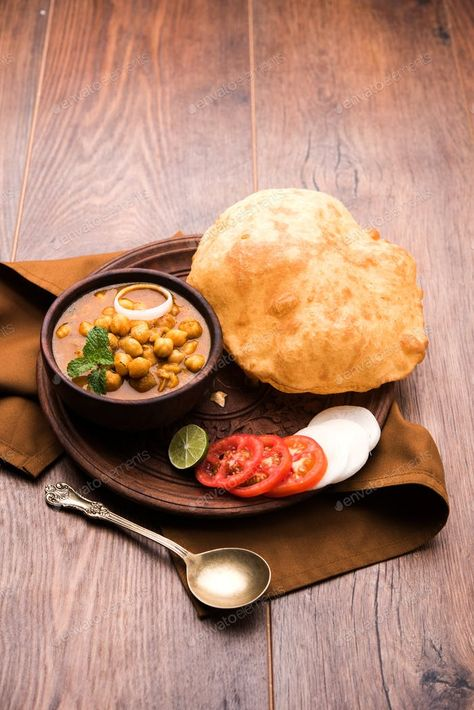
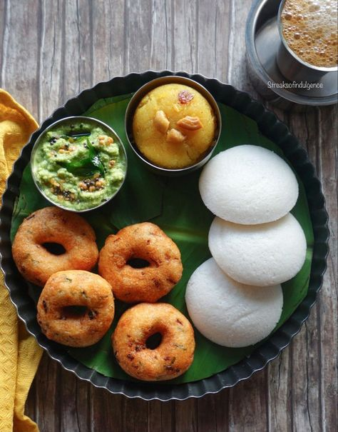
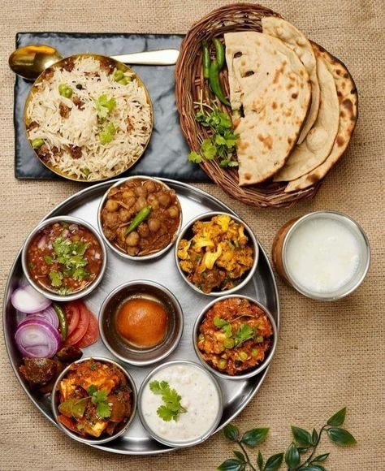
About Us
Welcome to Random Meal Generator
Our Random Meal Generator helps you discover new meal ideas effortlessly. Whether you're short on ingredients or just looking for inspiration, our smart meal suggestions make cooking easy and enjoyable. Try it now and transform your kitchen experience!
50
Popular
Dishes
1Cr+
Trusted
Users
Food Menu
Most Popular Items
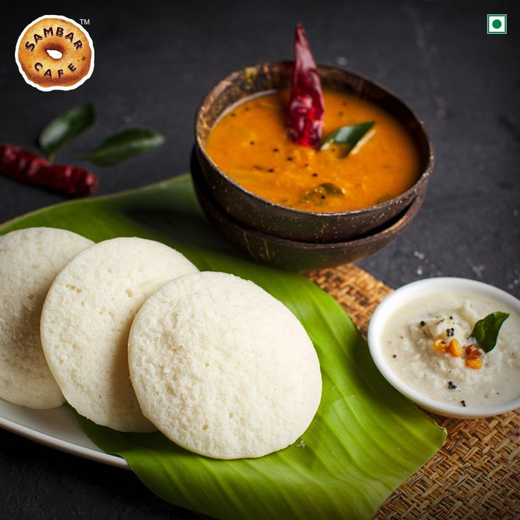
Idli with Sambar & Chutney ⏳ 30-40 minutes
Soft steamed rice cakes served with tangy lentil stew and coconut chutney. Healthy and filling.
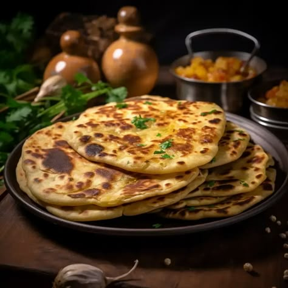
Aloo Paratha ⏳ 30-40 minutes
Whole wheat flatbread stuffed with spiced mashed potatoes. Crispy, hearty, and best with butter or yogurt
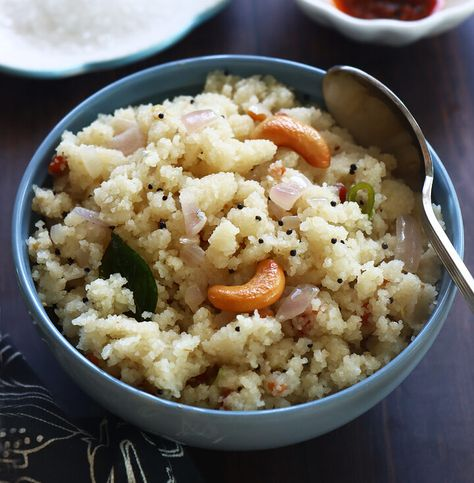
Upma ⏳ 15-20 minutes
A savory semolina porridge tempered with mustard seeds and curry leaves. Soft, mildly spiced, and comforting.
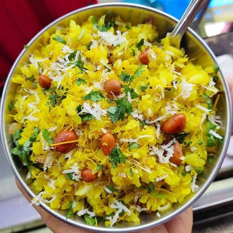
Poha ⏳ 15-20 minutes
A light, spiced flattened rice dish with onions, potatoes, and herbs. Quick, flavorful, and perfect with lemon.
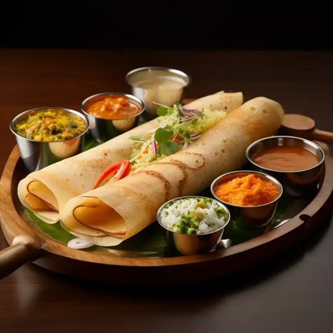
Dosa ⏳ 15-20 minutes
Thin, crispy South Indian crepe made from fermented rice and lentil batter. Served with sambar and chutney.
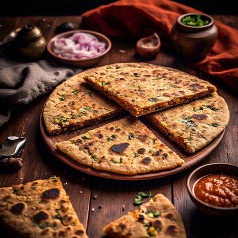
Thepla ⏳ 25 minutes
A spiced Gujarati flatbread made with whole wheat flour and fenugreek leaves. Healthy, flavorful, and great with pickles.
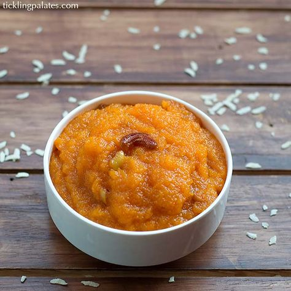
Rava Kesari ⏳ 20 minutes
A sweet semolina dessert flavored with saffron, ghee, and cardamom. Soft, aromatic, and melt-in-the-mouth.
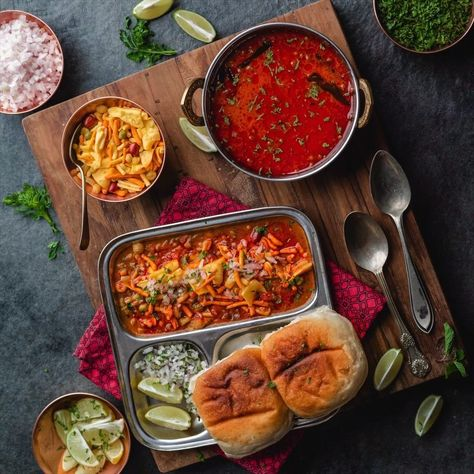
Misal Pav ⏳ 35 minutes
A spicy Maharashtrian curry made with sprouted lentils, topped with crunchy farsan, and served with pav (bread rolls).
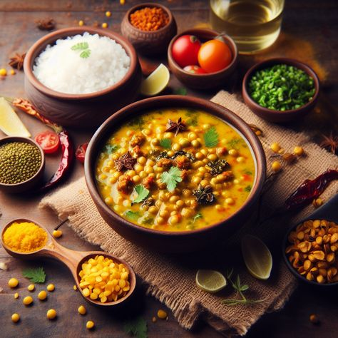
Dal Tadka ⏳ 30 minutes
A comforting dish made with lentils, tempered with garlic, cumin, and ghee. Served with rice or roti.
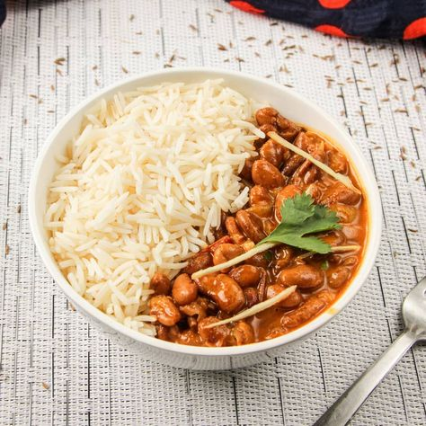
Rajma Chawal ⏳ 45 minutes
Kidney beans cooked in a rich tomato-based gravy, paired with steamed rice. A North Indian classic.
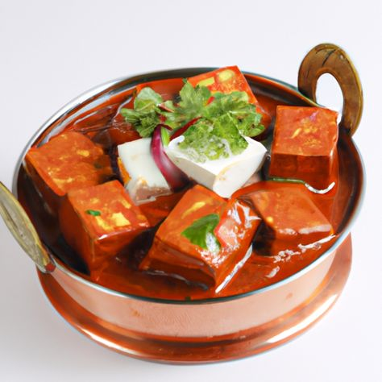
Paneer Butter Masala ⏳ 40 minutes
Soft paneer cubes simmered in a creamy, spiced tomato gravy. Best enjoyed with naan or roti.
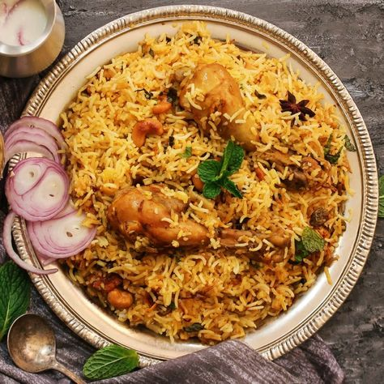
Hyderabadi Biryani ⏳ 60 minutes
Fragrant basmati rice cooked with marinated meat or vegetables, infused with aromatic spices.
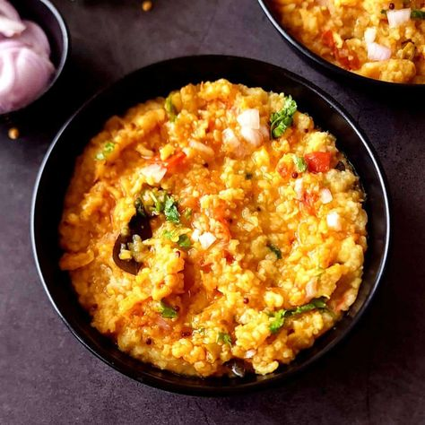
Masoor Dal Khichdi ⏳ 30 minutes
A nutritious one-pot meal made with lentils, rice, and mild spices. Light yet filling.
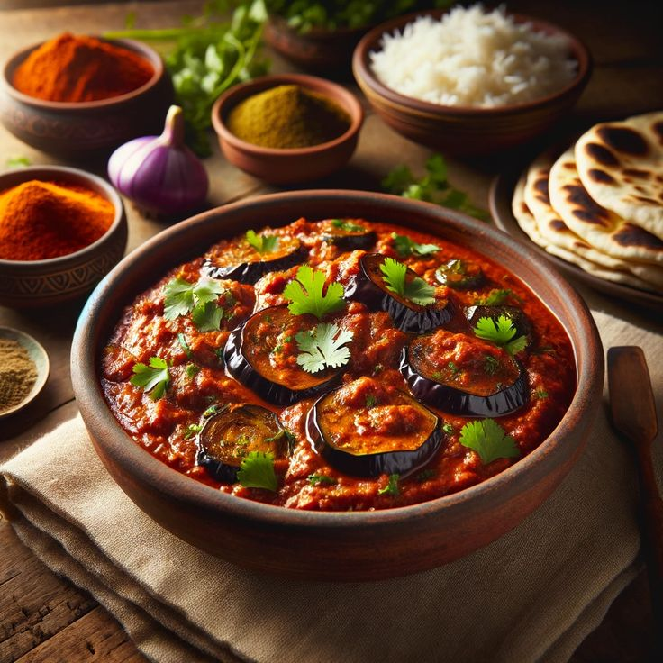
Baingan Bharta ⏳ 35 minutes
Smoked mashed eggplant cooked with onions, tomatoes, and spices. A rustic, flavorful side dish.
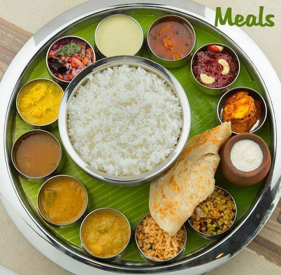
Sambar with Rice ⏳ 40 minutes
A South Indian lentil stew with vegetables, tamarind, and spices, served with rice.Fish Curry with Rice ⏳ 45 minutes
A coastal favorite featuring fish cooked in a spicy, tangy coconut-based curry.
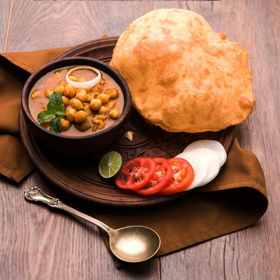
Chole Bhature ⏳ 45 minutes
A Punjabi favorite, featuring spicy chickpea curry served with deep-fried fluffy bread.
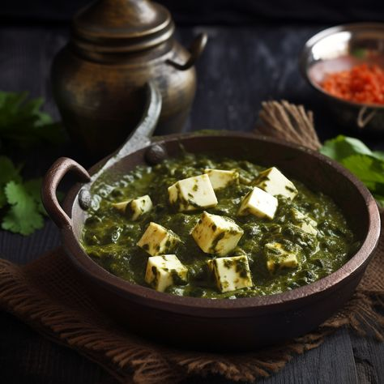
Palak Paneer with Roti ⏳ 40 minutes
Cottage cheese cubes cooked in a creamy spinach gravy, paired with soft rotis.
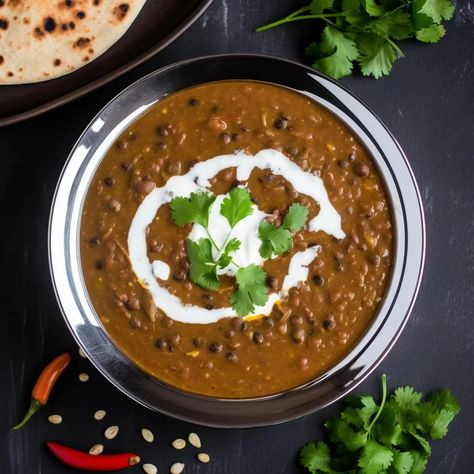
Dal Makhani with Jeera Rice ⏳ 60 minutes
Slow-cooked black lentils and kidney beans in a buttery, creamy gravy, served with cumin-flavored rice.
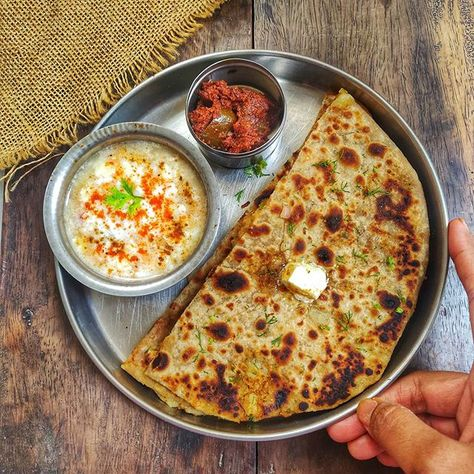
Stuffed Paratha with Curdr ⏳ 35 minutes
Whole wheat flatbreads stuffed with spiced potatoes, paneer, or radish, served with yogurt.
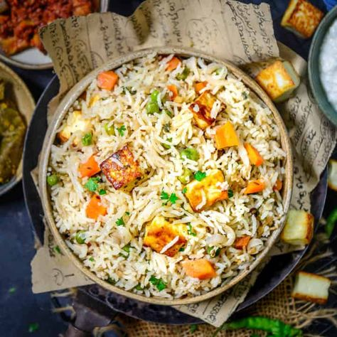
Vegetable Pulao ⏳ 30 minutes
Fragrant basmati rice cooked with mixed vegetables, whole spices, and herbs.
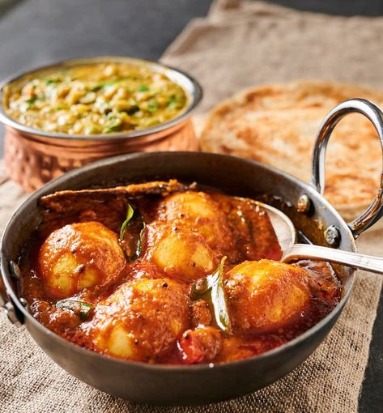
Egg Curry with Rice ⏳ 40 minutes
Boiled eggs simmered in a rich tomato-based curry, paired with steamed rice.
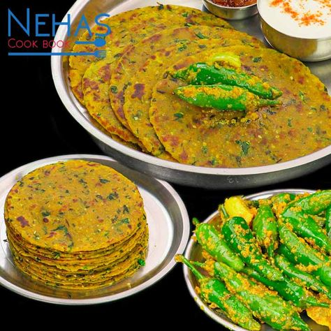
Methi Thepla with Pickle ⏳ 30 minutes
Gujarati spiced flatbreads made with fenugreek leaves, served with pickle or yogurt
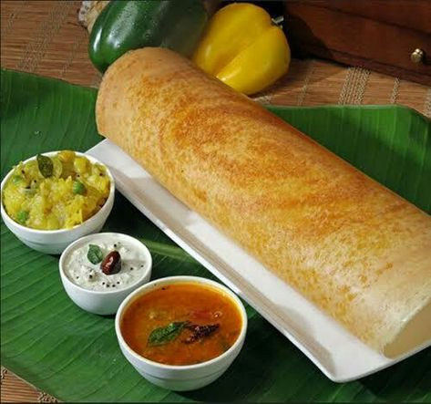